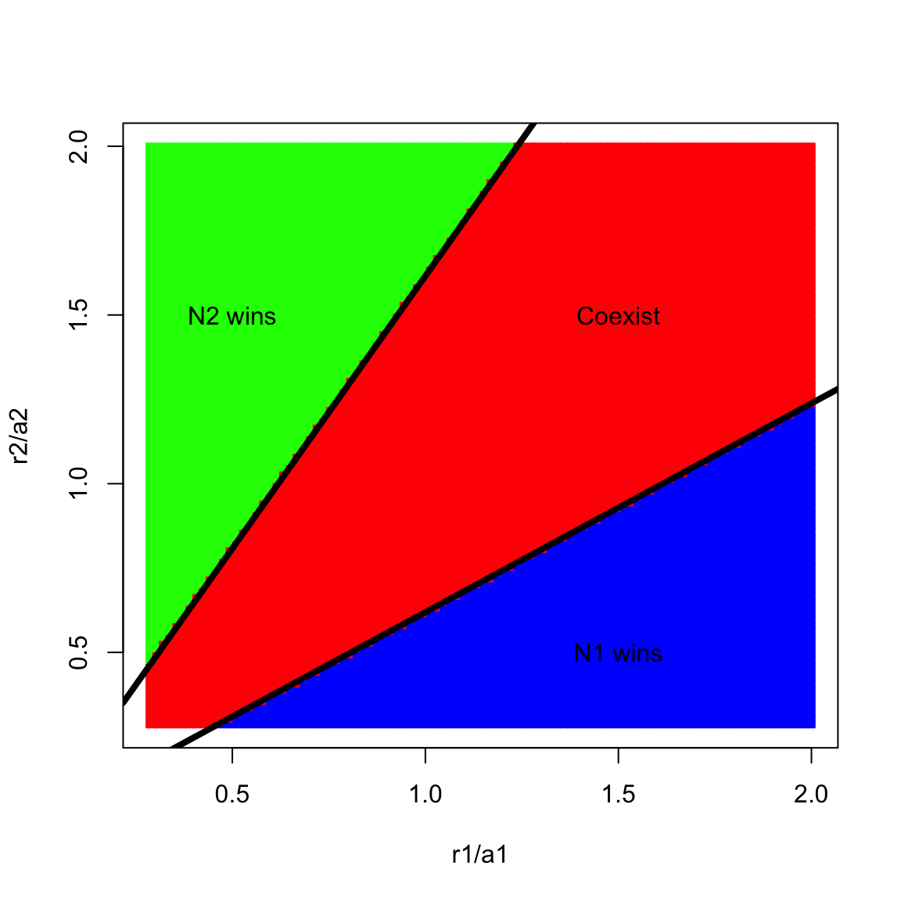

Week 13 - Parameter space for apparent competition model
Here, we are going to visualize the outcomes of apparent competition in the \(r_1/a_1\) – \(r_2/a_2\) space: \[\begin{align*} \frac{dN_1}{dt} &= r_1N_1(1-\frac{N_1}{K_1}) - a_1N_1P\\ \frac{dN_2}{dt} &= r_2N_2(1-\frac{N_2}{K_2}) - a_2N_2P\\ \frac{dP}{dt} &= e_1a_1N_1P + e_2a_2N_2P - mP. \end{align*}\] Two prey \(N_1\) and \(N_2\) grow logistically with intrinsic growth rate \(r_1\) and \(r_2\) and carrying capacity \(K_1\) and \(K_2\). Predator \(P\) consumes two prey following Holling type I functional response, with \(a_1\) and \(a_2\) representing the consumption rate of \(N_1\) and \(N_2\) by predator respectively. After consumption, the assimilation rate are \(e_1\) and \(e_2\). The death rate of predator is represented by \(m\).
library(deSolve)
library(ggplot2)
#### Create a function to evaluate the competition outcome
Apparent_logistic_func <- function(r1, r2, other.parameters){
# specify the model
Apparent_logistic_model <- function(times, state, parms) {
with(as.list(c(state, parms)), {
dN1_dt = r1 * N1 * (1 - N1 / K1) - a1 * N1 * P
dN2_dt = r2 * N2 * (1 - N2 / K2) - a2 * N2 * P
dP_dt = e1 * a1 * N1 * P + e2 * a2 * N2 * P - d * P
return(list(c(dN1_dt, dN2_dt, dP_dt)))
})
}
# model parameters
times <- seq(0, 3000, by = 10)
state <- c(N1 = 0.1, N2 = 0.1, P = 1)
parms <- c(r1 = r1, r2 = r2, other.parameters)
# run the ode
pop_size <- ode(func = Apparent_logistic_model, times = times, y = state, parms = parms)
# return final population size
N_final <- nrow(na.omit(pop_size)) # remove NAN's
return(pop_size[N_final, -1])
}
#### Set up parameter space of interest
Parms <- c(r1 = 0.1, r2 = 0.1, a1 = 0.35, a2 = 0.35, e1 = 0.4, e2 = 0.5, d = 0.8, K1 = 15, K2 = 12)
r_min <- 0.1
r_max <- 0.7
n <- 100
r1.vec <- seq(r_min, r_max, length.out = n)
r2.vec <- seq(r_min, r_max, length.out = n)
#### Create parameter space and saving space
comp_out <- expand.grid(r1 = r1.vec, r2 = r2.vec)
comp_out <- as.data.frame(cbind(comp_out,
matrix(0, nrow = dim(comp_out)[1], ncol = 3)))
head(comp_out)## r1 r2 1 2 3
## 1 0.1000000 0.1 0 0 0
## 2 0.1060606 0.1 0 0 0
## 3 0.1121212 0.1 0 0 0
## 4 0.1181818 0.1 0 0 0
## 5 0.1242424 0.1 0 0 0
## 6 0.1303030 0.1 0 0 0#### Apply the function across the parameter space
start_time <- Sys.time() # starting time
for(i in 1:dim(comp_out)[1]){
comp_out[i, 3:5] <- Apparent_logistic_func(r1 = comp_out$r1[i],
r2 = comp_out$r2[i],
other.parameters = Parms[-c(1:2)])
}
end_time <- Sys.time() # ending time
end_time - start_time # total time spent## Time difference of 2.265923 mins#### Determine outcome status
comp_out$Outcome <-
ifelse (comp_out[, 3] < 1e-4, "N2 win",
ifelse(comp_out[, 4] < 1e-4, "N1 win", "Coexist"))#### Visualize the competition outcomes in the grids -- base R
x <- comp_out$r1 / Parms[3]
y <- comp_out$r2 / Parms[4]
z <- as.factor(comp_out$Outcome) # Levels: Coexist N1 win N2 win
color <- c("red", "blue", "green")
plot(x, y, type = "n", xlab = "r1/a1", ylab = "r2/a2")
size <- 0.008571429 #0.003/0.35
for(i in 1:length(z)){
rect(x[i] - size, y[i] - size, x[i] + size, y[i] + size, col = color[z[i]], border = color[z[i]])
}
abline(a = 0, b = (1 - Parms[7] / (Parms[5] * Parms[3] * Parms[8])), lwd = 4)
abline(a = 0, b = (1 - Parms[7] / (Parms[6] * Parms[4] * Parms[9]))^-1,, lwd = 4)
text(0.5, 1.5, labels = "N2 wins")
text(1.5, 0.5, labels = "N1 wins")
text(1.5, 1.5, labels = "Coexist")#### Apply the function across the parameter space
start_time <- Sys.time() # starting time
for(i in 1:dim(comp_out)[1]){
comp_out[i, 3:5] <- Apparent_logistic_func(r1 = comp_out$r1[i],
r2 = comp_out$r2[i],
other.parameters = Parms[-c(1:2)])
}
end_time <- Sys.time() # ending time
end_time - start_time # total time spent## Time difference of 5.88894 mins#### Determine outcome status
comp_out$Outcome <-
ifelse (comp_out[, 3] < 1e-4, "N2 win",
ifelse(comp_out[, 4] < 1e-4, "N1 win", "Coexist"))#### Visualize the competition outcomes in the grids -- base R
x <- comp_out$r1 / Parms[3]
y <- comp_out$r2 / Parms[4]
z <- as.factor(comp_out$Outcome) # Levels: Coexist N1 win N2 win
color <- c("red", "blue", "green")
plot(x, y, type = "n", xlab = "r1/a1", ylab = "r2/a2")
size <- 0.008571429 #0.003/0.35
for(i in 1:length(z)){
rect(x[i] - size, y[i] - size, x[i] + size, y[i] + size, col = color[z[i]], border = color[z[i]])
}
abline(a = 0, b = (1 - Parms[7] / (Parms[5] * Parms[3] * Parms[8])), lwd = 4)
abline(a = 0, b = (1 - Parms[7] / (Parms[6] * Parms[4] * Parms[9]))^-1,, lwd = 4)
text(0.5, 1.5, labels = "N2 wins")
text(1.5, 0.5, labels = "N1 wins")
text(1.5, 1.5, labels = "Coexist")
#### Visualize the competition outcomes in the grids -- ggplot
ggplot(comp_out, aes(x = r1/Parms[3], y = r2/Parms[4], z = Outcome, fill = Outcome)) +
geom_tile() +
geom_abline(intercept = 0, slope = (1 - Parms[7] / (Parms[5] * Parms[3] * Parms[8])), size = 1.5) +
geom_abline(intercept = 0, slope = (1 - Parms[7] / (Parms[6] * Parms[4] * Parms[9]))^-1, size = 1.5) +
labs(x = expression(r[1]/a[1]), y = expression(r[2]/a[2])) +
scale_x_continuous(limits = c(r_min/Parms[3], r_max/Parms[4]), expand = c(0, 0)) +
scale_y_continuous(limits = c(r_min/Parms[3], r_max/Parms[4]), expand = c(0, 0)) +
scale_fill_brewer(palette = "Set1") +
theme_bw(base_size = 14) +
theme(panel.grid = element_blank()) +
coord_fixed(ratio = 1) +
annotate(geom = "text", x = 0.5, y = 1.5, label = "bold(bolditalic(N[2])~wins)", parse = T) +
annotate(geom = "text", x = 1.5, y = 1.5, label = "bold(Coexist)", parse = T) +
annotate(geom = "text", x = 1.5, y = 0.5, label = "bold(bolditalic(N[1])~wins)", parse = T)
If the parameter space is extended and sliced into more tiny grid, the outcomes will be more complete: